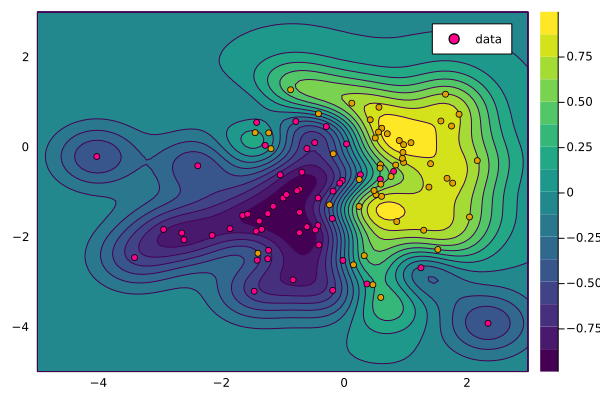

Support Vector Machine

You are seeing the HTML output generated by Documenter.jl and Literate.jl from the Julia source file. The corresponding notebook can be viewed in nbviewer.
This example is under construction
using KernelFunctions
using Distributions
using Plots
using LinearAlgebra
using Random
# Set plotting theme
theme(:wong)
# Set seed
Random.seed!(1234);Number of samples:
N = 100;Select randomly between two classes:
y = rand([-1, 1], N);Random attributes for both classes:
X = Matrix{Float64}(undef, 2, N)
rand!(MvNormal(randn(2), I), view(X, :, y .== 1))
rand!(MvNormal(randn(2), I), view(X, :, y .== -1));Create a 2D grid:
xgrid = range(floor(Int, minimum(X)), ceil(Int, maximum(X)); length=100)
Xgrid = ColVecs(mapreduce(collect, hcat, Iterators.product(xgrid, xgrid)));Create kernel function:
k = SqExponentialKernel() ∘ ScaleTransform(2.0)Squared Exponential Kernel (metric = Distances.Euclidean(0.0))
- Scale Transform (s = 2.0)Optimal prediction:
f(x, X, k, λ) = kernelmatrix(k, x, X) / (kernelmatrix(k, X) + exp(λ) * I) * yf (generic function with 1 method)Compute prediction on a grid:
contourf(xgrid, xgrid, f(Xgrid, ColVecs(X), k, 0.1))
scatter!(X[1, :], X[2, :]; color=y, lab="data", widen=false)
This page was generated using Literate.jl.